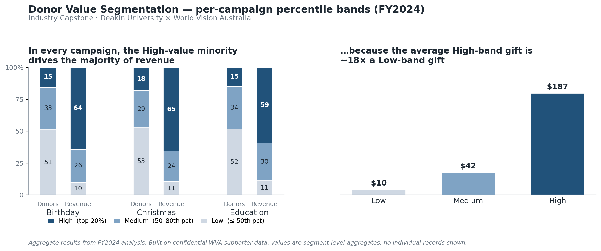

Industry Capstone · Deakin University × World Vision Australia
Donor Value Segmentation
Turning a one-size-fits-all re-engagement journey into a value-tiered CRM strategy
World Vision Australia runs Bounceback, a program that re-engages lapsed supporters across three campaign types — Christmas, Birthday, and Education. Every supporter moved through the same fixed communication journey, regardless of how much they gave or how quickly they responded: operationally simple, but it over-communicated to some supporters while under-serving the most valuable ones. As part of a six-person analytics team, I led the donor value segmentation workstream — the question of whether some donor groups are worth disproportionately more, and whether the journey should treat them differently.

Approach
I classified supporters into High / Medium / Low value bands using percentile thresholds on donation value, calculated within each campaign: Low = bottom 50%, Medium = 50th–80th percentile, High = top 20%. Three deliberate choices sit behind that:
- Percentiles, not fixed dollar cut-offs. Donation values are heavily right-skewed — a long tail of larger gifts. Percentiles handle that skew without an arbitrary “$X = High” line and adapt to each campaign's scale. Trade-off: percentile bands shift as the population changes, so they are revisited periodically rather than fixed as a permanent rule. (Gifts cluster at round amounts, so the High band lands near ~15–18% of donors rather than a clean 20%.)
- Per campaign, not pooled — a decision-unit choice. Per-gift economics are actually similar across campaigns (the average High-band gift is ~$190 in all three), so pooling would not have badly distorted the bands. I segmented per campaign because the Bounceback journeys are campaign-triggered: the segmentation feeds per-campaign journey design, so the unit I segment on matches the unit I make decisions on.
- Validated, not assumed. Rather than trust that the top 20% mattered, I measured the share of total revenue each band actually captured — turning a convention into evidence.
What I found
- Value was strongly concentrated in every campaign. The High band — only ~15–18% of donors — generated roughly 60–65% of revenue (Birthday ~64%, Christmas ~65%, Education ~59%), while the bottom half of donors contributed about 10%.
- The gap is driven by gift size: the average High-band gift (~$187) was about 18× a Low-band gift (~$10). A small number of supporters were doing most of the financial work.
- This concentration was masked by the uniform journey — high-value supporters were treated the same as everyone else, exposing the program to churn risk among exactly the donors it could least afford to lose.
- The pattern held across all three campaigns, which is why it justified a structural change rather than a one-campaign tweak.
Recommendation
Move from a uniform journey to a value-tiered one: protect and prioritise the High band, design uplift paths for the Medium band, and apply cost-controlled contact for the Low band — without cutting the total number of touches, only re-ordering and re-weighting them. This fed the team's combined recommendation for a segmentation dashboard overlaying value band with response speed and channel.
What I’d do next
Two extensions, both aimed at a relationship-level view rather than a campaign-level one:
- Aggregate to donor-level lifetime value. The current bands are per campaign, so the same supporter can sit in different bands across campaigns. For a “who are our most valuable supporters, full stop?” view, I’d roll value up to one band per donor — the LTV cut that targeting and personalisation actually need. The principle: the unit you segment on should match the decision you’re driving — campaign-level for journey design, donor-level for lifetime value.
- Extend monetary-only bands to full RFM (recency, frequency, monetary). The donation data carries dates and repeat gifts, so the inputs already exist. RFM would distinguish a lapsing high-value donor from a loyal one at the same spend level — something a value-only band cannot.